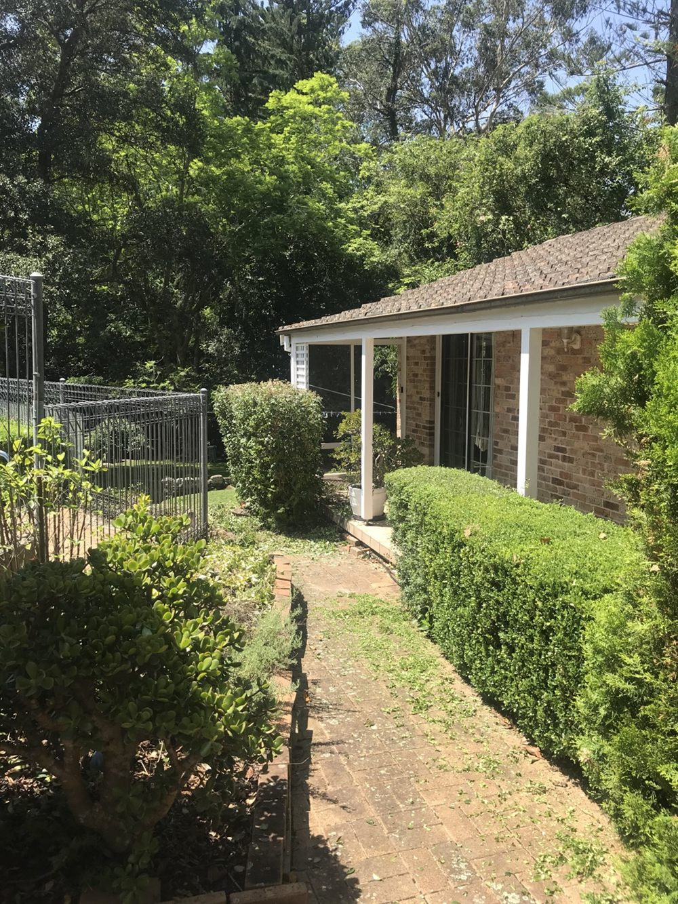

Gardener St Ives
A reliable local gardener for St Ives, St Ives Chase and nearby Sydney North Shore suburbs.
Local garden services for St Ives properties
Grene Gardening helps homeowners, strata properties and local businesses with practical garden care in and around St Ives. Services can be arranged for regular maintenance, seasonal tidy ups or one-off garden clean ups.
If your garden needs mowing, hedge trimming, weeding, pruning, mulching or green waste removal, a local gardener can help keep the work manageable.
- Residential gardener St Ives
- Strata gardener North Shore
- Garden services North Shore
- Reliable local gardener
- Professional gardener Sydney

Nearby service areas
- St Ives
- St Ives Chase
- Gordon
- Pymble
- Turramurra
- Killara
- Wahroonga
- Roseville
- Chatswood
- Sydney North Shore